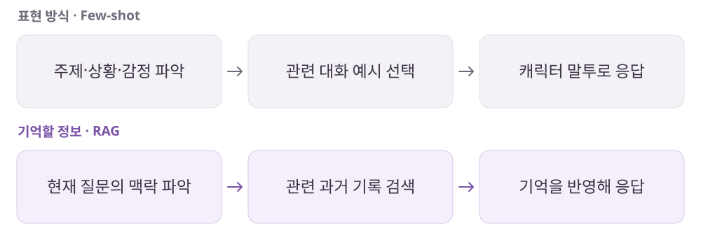

Zeta
캐릭터의 말투와 대화의 기억은 같은 문제일까?
캐릭터 대화 경험을 출발점으로 AI 응답 구조와 기억 방식을 탐구한 기술 학습 기록.
개인 학습 기록 · 원문에 기록한 당시의 경험을 재구성했습니다. 기획 의도는 개인 해석이며 개선안·확인 지표는 검증 전 제안입니다.
Zeta의 실제 내부 아키텍처를 확인한 문서가 아닙니다. 서비스 경험에서 출발한 구조 가설과 개인 학습 내용입니다.
01사용자와 해결 방향
누구를 위한 서비스인가캐릭터다운 말투와 이전 대화의 맥락이 이어지는 상호작용을 기대하는 사용자.
Why · 사용자의 필요
같은 캐릭터의 성격·말투를 유지하는 문제와 과거 대화 정보를 기억하는 문제는 다르다.
What · 서비스의 답
Few-shot은 응답 표현의 예시로, RAG는 필요한 기록 검색으로 역할을 나누는 설계를 학습했다.
02핵심 기능과 벤치마킹
- 오케스트레이션
- 여러 캐릭터의 응답 순서와 컨텍스트 전달을 조율하는 개념.
- Few-shot 예시 선택
- 주제·상황·감정에 맞는 대화 예시를 골라 응답 스타일 안내.
- 대화 기록 검색
- 이전 정보가 필요할 때 관련 기록을 찾아 응답에 반영하는 개념.
비교해서 살펴본 지점
- Few-shot / RAG
- 서비스 경쟁 비교가 아니라 말투 안내와 정보 검색의 역할 비교.
03동작 구조와 설계 의도
말투 예시와 대화 기억의 역할 분리

학습하며 정리한 구조
- 여러 캐릭터의 응답 순서와 맥락 전달을 오케스트레이션·에이전트 구조로 가정했습니다.
- 주제·상황·감정에 맞는 대화 예시를 선택하고 프롬프트에 조립하는 흐름을 설계 연습했습니다.
왜 이렇게 설계했을까 · 나의 해석
- 말투 예시는 ‘어떻게 말할지’, 대화 기록 검색은 ‘어떤 정보를 참고할지’라는 서로 다른 목적을 가진다고 구분했습니다.
- 모든 예시를 한꺼번에 넣기보다 현재 상황에 맞는 정보를 선택하는 기준과 데이터 구조가 필요하다고 봤습니다.
04문제와 개선 제안
Pain Point · 걸리는 지점
- 예시를 모두 넣으면 비용과 문맥 부담이 커질 수 있다.
- 현재 상황과 맞지 않는 예시를 가져오면 캐릭터의 반응이 어색해질 수 있다.
설계 연습
- 사용자 입력 → 주제 분류 → 예시 조회 → 프롬프트 조립 → 응답 흐름으로 입출력 정의.
- Few-shot과 RAG를 역할 중심으로 구분하되 실제 구현 방식은 별도로 검증.
확인할 지표 · 검증 계획 제안
상황별 말투 일관성과 이전 정보 회상 정확도를 서로 다른 평가 항목으로 설계한다.
05장점과 아쉬운 지점
좋았던 점
- 표현 방식과 기억할 정보를 분리해 각 문제의 해결 수단을 구체화한다.
아쉬운 점 · 더 살필 점
- 공개된 내부 설계를 검증한 자료가 아니며, 실제 Zeta 구현으로 단정할 수 없다.
06내가 주목한 점
- 프롬프트를 길게 쓰기 전에 필요한 데이터와 선택 조건을 정의할 것.
- 발화 순서·예시 검색·기억 검색·응답 생성을 나눠 품질을 검토할 것.
분석 원문Zeta · 노션 원문 ↗